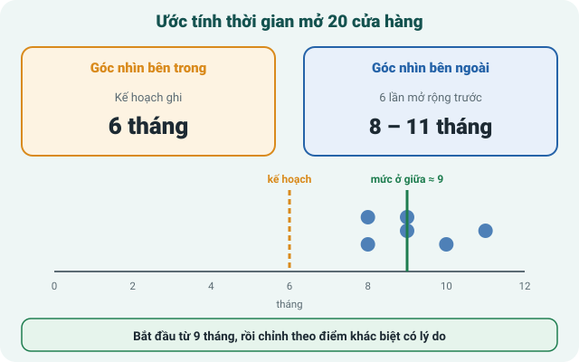

K3 · Giải quyết vấn đề và ra quyết định › Bậc 5 Dẫn dắt
Quyết định chiến lược theo nhóm, có góc nhìn bên ngoài và pre-mortem
Bài này làm Tờ 2: Biên bản pre-mortem. Mẫu in. Bài nâng cấp Quyết định khi thiếu thông tin (N4) từ quyết định cá nhân lên quyết định của cả ban điều hành.
1. Mục tiêu
- Đặt ước tính từ ít nhất 5 trường hợp tương tự cho chi phí hoặc thời gian của một quyết định lớn.
- Chủ trì buổi pre-mortem 45 phút và ghi Biên bản pre-mortem.
2. Khởi động truy xuất
- Kể ít nhất bốn việc chỉ cấp điều hành làm được.
- Nhãn D và T trong Lịch điều hành nghĩa là gì?
Đáp án
- Chọn ưu tiên và việc không làm; phân bổ người và tiền giữa các khối; thiết kế cơ cấu, quyền quyết định; chuẩn bị người kế cận; giữ quan hệ bên ngoài; theo dõi rủi ro lớn.
- D: cấp dưới làm được. T: việc cấp tổ chức.
Xem lại: Lãnh đạo tổ chức.
3. Giải thích
Quyết định lớn thường được bàn trong ban điều hành. Nhóm có thêm góc nhìn, nhưng cũng có ba cái bẫy.
- Lạc quan: kế hoạch luôn trông nhanh và rẻ hơn thực tế.
- Nể người cao nhất: sếp nói trước thì mọi người nói theo.
- Nghĩ giống nhau: ai có nghi ngờ thì ngại lên tiếng.
Công cụ 1. Góc nhìn bên ngoài. Đừng chỉ ước từ kế hoạch của mình. Hãy hỏi: các dự án tương tự đã thật sự tốn bao lâu, bao nhiêu? Đây là ý tưởng của reference class forecasting (dự báo theo lớp tham chiếu).

Cách làm: tìm ít nhất 5 trường hợp đã xong, trong hoặc ngoài công ty. Xem kết quả thật. Lấy mức ở giữa làm ước tính gốc. Chỉ chỉnh khi có lý do cụ thể.
Công cụ 2. Pre-mortem nhóm. Pre-mortem nghĩa là "khám nghiệm trước". Trước khi chốt, người chủ trì nói: "Giả sử một năm sau, việc này thất bại nặng. Vì sao?"
Buổi pre-mortem 45 phút
- 5 phútNêu quyết định và giả định thất bại.
- 5 phútMỗi người tự viết lý do, không bàn.
- 15 phútLần lượt đọc lý do. Người chức cao nhất đọc sau cùng.
- 15 phútChọn 3 lý do lớn. Mỗi lý do có biện pháp và người chịu trách nhiệm.
- 5 phútGhi tín hiệu dừng và ngày xem lại.
Viết riêng trước khi bàn giúp ý kiến không bị cuốn theo người nói đầu. Người cao chức nói sau cùng để người khác dám nói.
Pre-mortem không nhằm hủy quyết định. Nó giúp quyết định chắc hơn, có dự phòng và có điểm dừng.
4. Ví dụ tại nơi làm việc Việt Nam
Tình huống giả định. Một chuỗi siêu thị mini ở Cần Thơ định mở 20 điểm mới ở miền Tây. Kế hoạch ghi 6 tháng.
Giám đốc vận hành, chị Ngân, xem lại 6 lần mở rộng trước của công ty. Các lần đó mất từ 8 đến 11 tháng. Mức ở giữa khoảng 9 tháng.
Ban điều hành đặt ước tính gốc 9 tháng. Họ chỉ chỉnh xuống 8 tháng, vì lần này đã có sẵn đội tìm mặt bằng.
Rồi chị Ngân chủ trì pre-mortem. Tổng giám đốc đọc lý do sau cùng. Ba lý do lớn nhất được chọn:
- Thiếu quản lý cửa hàng. Biện pháp: đào tạo 10 phó cửa hàng từ tháng đầu. Người chịu: trưởng phòng nhân sự.
- Mặt bằng ký chậm. Biện pháp: ký theo đợt 5 điểm. Người chịu: trưởng phát triển mặt bằng.
- Hàng tươi hỏng vì kho xa. Biện pháp: thử 3 điểm trước khi mở tiếp. Người chịu: giám đốc chuỗi cung ứng.
Tín hiệu dừng: 3 điểm đầu lỗ quá 2 tháng liên tục thì họp lại. Ngày xem lại: cuối tháng thứ 3.
Vì sao cách này tốt: ước tính dựa trên dữ liệu thật. Lý do thất bại được nói ra trước khi chốt, mỗi lý do có người chịu.
5. Thực hành
Tình huống giả định. Bạn là phó tổng giám đốc một công ty phần mềm ở Đà Nẵng. Ban điều hành định thay hệ thống kế toán trong 4 tháng.
Làm hai việc: (1) Nêu cách tìm 5 trường hợp tương tự. (2) Viết 3 lý do thất bại có thể có, mỗi lý do kèm biện pháp và người chịu.
Gợi ý 1
Trường hợp tương tự có thể là các dự án thay phần mềm lớn trước đây của công ty. Cũng có thể hỏi đơn vị triển khai về các khách hàng cùng quy mô.
Gợi ý 2
Nghĩ về con người, dữ liệu và thời điểm. Chuyển hệ thống vào mùa quyết toán có rủi ro gì?
Lời giải mẫu
- Lớp tham chiếu: 3 dự án thay phần mềm của công ty trong 5 năm qua; 2 khách hàng cùng quy mô do đơn vị triển khai giới thiệu. Ghi thời gian thật của từng dự án.
- Lý do thất bại: - Dữ liệu cũ sai, chuyển sang bị lệch. Biện pháp: làm sạch dữ liệu trước 1 tháng. Người chịu: kế toán trưởng. - Trùng mùa quyết toán. Biện pháp: chạy song song hai hệ thống qua một kỳ khóa sổ. Người chịu: giám đốc tài chính. - Nhân viên không quen. Biện pháp: đào tạo theo vai trò, có người hỗ trợ tại chỗ 2 tuần. Người chịu: trưởng dự án.
(Thông tin là giả định.)
6. Tự kiểm tra
Chọn đáp án. Mỗi lựa chọn đều có giải thích.
Câu 1. Kế hoạch xây kho mới ghi 10 tháng. Năm dự án kho tương tự trong ngành mất 13 đến 18 tháng. Ước tính gốc nên là?
-
Chưa đúng. Đây là góc nhìn bên trong. Ai cũng nghĩ đội mình nhanh hơn, nên kế hoạch thường lạc quan.
-
Đúng. Đúng. Góc nhìn bên ngoài lấy dữ liệu thật làm điểm xuất phát.
-
Chưa đúng. Luôn lấy mức tệ nhất cũng là thiên lệch. Bắt đầu từ mức ở giữa, rồi chỉnh có lý do.
Câu 2. Trong buổi pre-mortem, tổng giám đốc muốn nói ý kiến đầu tiên để định hướng. Bạn là người chủ trì. Nên làm gì?
-
Chưa đúng. Người cao chức nói trước thì người khác dễ nói theo. Lý do khác bị chìm.
-
Đúng. Đúng. Viết riêng rồi để người cao chức nói sau giúp nhiều ý kiến khác được nêu ra.
-
Chưa đúng. Ý kiến của tổng giám đốc vẫn quý. Vấn đề chỉ là thứ tự nói.
Câu 3. Sau pre-mortem, nhóm có 12 lý do thất bại. Bước tiếp theo đúng là gì?
-
Chưa đúng. Pre-mortem không nhằm hủy quyết định. Mục tiêu là làm quyết định chắc hơn.
-
Đúng. Đúng. Lý do chỉ có ích khi biến thành việc làm có người chịu.
-
Chưa đúng. Danh sách không có người chịu thì thường không ai làm.
Câu 4. Một đồng nghiệp nói: pre-mortem đã được chứng minh làm quyết định đúng hơn 30%. Nhận xét nào chính xác?
-
Chưa đúng. Nghiên cứu gốc chỉ đo số lý do người ta nêu ra. Nó chưa đo độ đúng của quyết định.
-
Đúng. Đúng. Biết mức bằng chứng giúp bạn dùng công cụ mà không hứa quá.
-
Chưa đúng. Có cơ sở thực nghiệm về việc nêu lý do. Chỉ là chưa đủ để nói về độ đúng.
7. Phản tư
- Quyết định lớn gần nhất của ban bạn đã ước tính từ kế hoạch hay từ trường hợp tương tự?
- Trong các cuộc họp của bạn, ai thường nói trước? Điều đó ảnh hưởng gì?
8. Áp dụng thật
Trong 7 ngày tới, chọn một quyết định lớn sắp chốt. Tìm ít nhất 5 trường hợp tương tự. Chủ trì một buổi pre-mortem và ghi Tờ 2.
Mức bằng chứng. Góc nhìn bên ngoài: Flyvbjerg (2006), Project Management Journal 37(3), dựa trên lý thuyết quyết định của Kahneman và Tversky. Pre-mortem: Klein (2007), Harvard Business Review, tháng 9/2007. Đây là bài hướng dẫn thực hành, không phải nghiên cứu có bình duyệt. Cơ sở thực nghiệm của pre-mortem là Mitchell, Russo và Pennington (1989), Journal of Behavioral Decision Making 2(1). Nghiên cứu này cho thấy người ta nêu được nhiều lý do hơn khi coi kết cục là đã xảy ra. Nó chưa chứng minh quyết định sẽ tốt hơn.
9. Siêu dữ liệu
| skill | K3 · Giải quyết vấn đề và ra quyết định |
|---|---|
| level | Bậc 5 · Dẫn dắt |
| group | N6 |
| framework_map | UK Civil Service Success Profiles: Making Effective Decisions; APS Integrated Leadership System: Shapes strategic thinking; WEF: Analytical thinking; SkillsFuture CCS: Decision Making; CSfW: 3b Make decisions (chỉ dẫn chiếu) |
| updated | 2026-11-14 |
Hoàn thành bài
Đánh dấu đã học để site gợi ý lịch ôn sau 1, 3 và 7 ngày. Dữ liệu chỉ lưu trên máy của bạn.
Lịch ôn gợi ý: